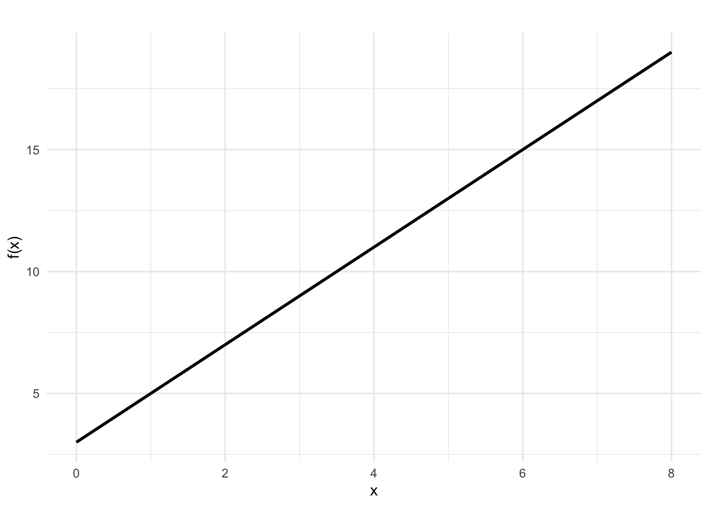
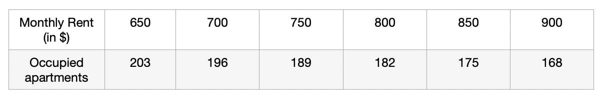

2 Rate of Change
2.1 Calculating Rate of Change
The rate of change (ROC) is perhaps the most important component of any linear function. As we have seen, it can tell you whether the function is increasing or decreasing and can be used to create the function formula (linear model) for a given real life situation. The question that arises is, “how can we compute the rate of change from given data (e.g., from a table?”. In the earlier taxi example, suppose, we did not know the rate of change but only knew the cost of riding 4 miles and 7 miles. How can we use this information together with the fact that the function is linear to find the rate of change and even the formula for the function?
In the next few examples we explore ways of finding the rate of change and how to use it to create the linear function/model for given real-life situations. At the end, a formula for computing the rate of change is provided.
Example 1
The population of a city can be modeled approximately using a linear function. In 2002, the population was 23,400 and in 2006, it was 27,800.
Find the rate of change of the population for this city.
What is the formula of the linear function for the scenario? Let \(P\) be the population and \(t\) the time in years.
Assuming the model (function) holds true until 2024, what would be the population of the town in 2024?
Solution
- Since we are told that the population grows linearly, we know that the growth between 2002 and 2003 is the same as the growth between 2003 and 2004, etc. Thus, to find the rate of change (i.e., population growth per year), we can divide the population change between 2002 and 2006 by the number of years as shown:
- If we use 2002 as the base year(i.e., \(t=0\)), then the FIXED \(y-intercept\) value in the function is 23,400. We are left with writing down the function in the form \(f(x)=mx+b\) where \(m\) is the rate of change and \(b\) is the constant (initial value). Our input variable is \(t\) so we use it to replace \(x\).
\[f(t) = 1100t+23,400\]
- For 2024, \(t=22\) years. Thus,
Example 2
The summit of Africa’s largest peak, Mt. Kilimanjaro, has two main ice fields and a glacier at its peak. Geologists measured the ice cover in the year 2000 (\(t = 0\)) to be approximately \(1951\hspace{.05in}m^2\); in the year 2007, the ice cover measured \(1555 \hspace{.05in}m^2\).
Suppose that the amount of ice cover at the peak of Mt. Kilimanjaro is changing at a constant average rate from year to year. Find a linear model, \(A=f(t)\) whose output is the area, A, in square meters in year \(t\) (where \(t\) is the number of years after 2000).
What do the slope and \(A\)-intercept mean in the model you found in (a)? In particular, what are the units on the slope?
- Compute \(f(17)\). What does this quantity measure? Write a complete sentence to explain.
- If the model holds further into the future, when do we predict the ice cover will vanish?
Solution
- We begin by finding the rate of change. Since we know that the rate of change is constant year after year, we can divide the difference in ice coverage between 2007 and 2000 by 7 to get the rate of change per year.
\[\begin{align} Rate\hspace{.04in} of\hspace{.04in} change &= \frac{Coverage \hspace{.04in} in \hspace{.04in} 2007 \hspace{.04in}- Coverage \hspace{.04in} in \hspace{.04in} 2000}{2007-2000}\\\\ &= - 56.57\hspace{.04in} m^2\hspace{.04in} per \hspace{.04in} year \end{align}\]
The general format of the function is \(A(t)=mt+b\) where \(m\) is the rate of change and \(b\) is the \(A(t)\)-intercept (or the value of \(A(0)\) which we know is 1951).
Thus, the function is,
\[A(t)=-56.57t + 1951\]
The slope means that the ice for every additional year, the ice coverage decreases by \(56.57 m^2\). The units are square meters per year (\(m^2/year\)).
The y intercept means that the initial coverage at year zero (when the measurement was first taken) is \(1951 m^2\).\(f(17)=(-55.57\times17)+1951=1006.31\); This means that there were \(1006.31 mi^2\) of ice coverage on Mt. Kilimanjaro by 2017 (i.e., 17 years after 2000).
Remember that \(A(t)\) is the function that gives the ice coverage after \(t\) years. Therefore, if the ice cover is zero, it means \(A(t)=0\). We compute \(t\) by solving the equation \(-56.57t + 1951=0\) for t.
2.2 A Formula For ROC
From the foregoing examples, it should be readily clear that, given two input values \(x_1\) and \(x_2\) such that \(x_1\neq x_2\),
\[\begin{aligned} \text{Rate of Change} &=\frac{\text{Change in Output}}{\text{Change in Input}}\\ \\ &=\frac{f(x_2)-f(x_1)}{x_2 - x_1} \end{aligned}\]Example 3
If \(f(x)\) is a linear function, \(f(3)=−2\), and \(f(8)=1\), find an equation/formula for the function.
Solution
In this problem, we are looking at the input interval between 3 and 8. Thus, \(x_1=3\) and \(x_2=8\). To find the ROC for \(f(x)\) we proceed as follows:
\[\begin{align} ROC &= \frac{f(x_2)-f(x_1)}{x_2 - x_1}\\\\ &= \frac{f(3)-f(1)}{8 - 3}\\\\ &= \frac{1-(-2)}{5}\\\\ &=\frac{3}{5} \end{align}\] Next, the general form of the linear function is \(f(x)=mx+b\), where \(m\) is the \(ROC\) (aka slope. So, we can write, \(f(x)=\frac{3}{5}x+b\). To find \(b\), we can use one of the known values of \(f(x)\), such as \(f(8)\) and solve for \(b\) as follows:
\[\begin{aligned} f(8)&=\frac{3}{5}\times (8)+b\\\\ 1&=\frac{24}{5}+b\\ \\ b&=1-\frac{24}{5}\\ \\ &=-\frac{19}{5} \end{aligned}\]So, the equation becomes,
\[f(x)=\frac{3}{5}x-\frac{19}{5}\]
2.3 Point-Slope Equation Format
The equation \(y=mx+b\) is called the slope-intercept form of a linear function (equation). In cases where you only know one of the points, say \((x_1,y_1)\) and the slope \(m\) you can express the equation of the line as follows:
\[y-y_1=m(x-x_1)\] Where, \((x_1,y_1)\) is the KNOWN point.
After this, you can then rearrange the equation into the slope-intercept format. You just need to be careful with your algebraic manipulation when doing this. See example below:
Example 4
A new house was sold for $296000 8 years after it was purchased. The original owners calculated that the house appreciated $2,500 per year while they owned it. Find a linear function that describes the above situation if \(x\) is the number of years since the building was purchased.
Solution
Let \(x\) be the number of years and \(C(x)\) be the cost of the house after \(x\) years.
Note that, we do not know the initial price (i.e., \(b\)) but we know the \(ROC\) in cost to be 2,500 $ per year (i.e., a linear function). We also know the cost after 8 years (i.e, we know one point \((8, 296,000)\)).
We can use this information and the concept of slope-point format to write the equation of the line as follows:
\[ \begin{aligned} y-y_1&=m(x-x_1)\\ \\ y-296,000&=2500(x-8)\\ \\ y-296,000&=2500x-20,000\\ \\ y&=2500x-20000+296,000\\ \\ y&=2500x+276,000 \end{aligned} \] Note that in the above equation, \(y=C(x)\). So we are done. As a bonus, we know the cost of the house was $276,000 eight years ago.
2.4 Exercises
A town has a population of 2,000 people at time \(t=0\). In each of the following cases, write a formula for the population \(P\), of the town as a function of year \(t\).
- The population increases by 90 people per year.
- The population increases by 1 percent per year.
- The population increases by 90 people per year.
Find the slope of the line connecting the points \((2,7)\) and \((6,11)\). Find the equation of this line.
Find the slope of the line connecting the points \((2,7)\) and \((2,11)\). Find the equation of this line.
Working as an insurance salesperson, Ilya earns a base salary and a commission on each new policy, so Ilya’s weekly income, \(I\), depends on the number of new policies, \(n\), he sells during the week. Last week he sold 3 new policies, and earned $760 for the week. The week before, he sold 5 new policies, and earned $920. Find an equation for \(I(n)\), and interpret the meaning of the components of the equation.
Below is the graph of a linear function, \(f(x)\). The function crosses the y-axis at the point \(0,y\). Find the exact value of \(y\).
An apartment manager keeps careful record of how the rent charged per unit corresponds to the number of occupied units in a large complex. See the table:
- Why is it reasonable to say that the number of occupied apartments is a linear function of monthly rent?
- Let \(A\) be the number of occupied apartments and \(R\) the monthly rent charged (in dollars). If we let \(A=f(R)\) ,what is the slope of the linear function \(f(R)\)? What is the meaning of the slope in the context of this question?
- Determine a formula for \(A=f(R)\).
- If the rent were to be increased to $1000, how many occupied apartments should the apartment manager expect? How much total revenue would the manager collect in a given month when rent is set at $1000?
- Why is it reasonable to say that the number of occupied apartments is a linear function of monthly rent?